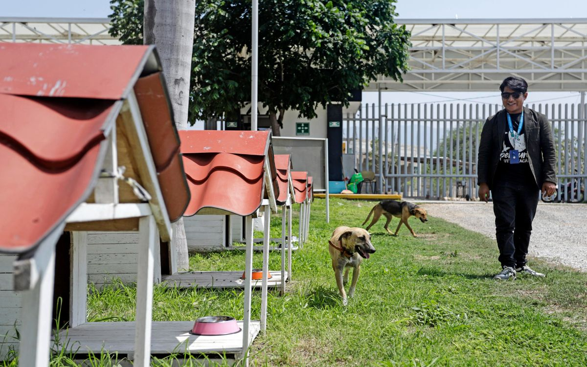

Welcome to HEALING LITTLE PETS
Learn about our animal shelter
About us...
Our animal shelter aims to protect every animal that has been abandoned or is living in poor conditions. To date, we have rescued 50 animals, and we hope that each one will be taken in by new owners who will give them a second chance.

Objective of our website
We believe we can make a difference through this platform, which features various sections you can access by clicking on buttons. These will take you to different pages covering topics such as adoption, animal care, and how to get in touch with us where you can share your feedback, and much more. This project was created with a great deal of care; our goal is to bring more visibility to animals that are living on the streets, have been mistreated, or are without a home. To that end, we have developed this functional website dedicated to that very purpose.